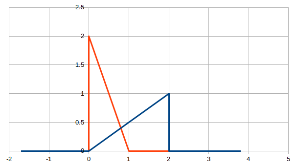
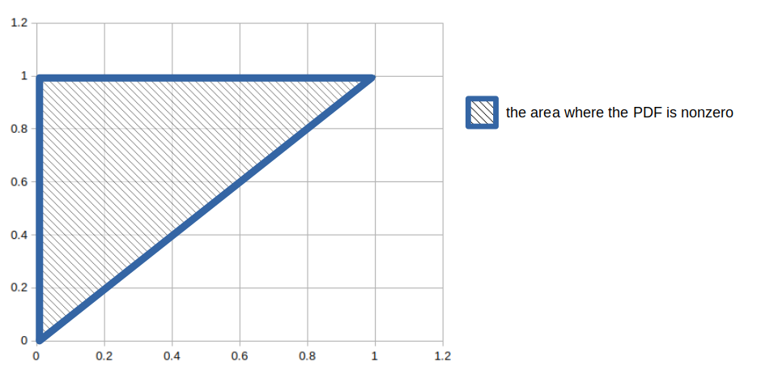
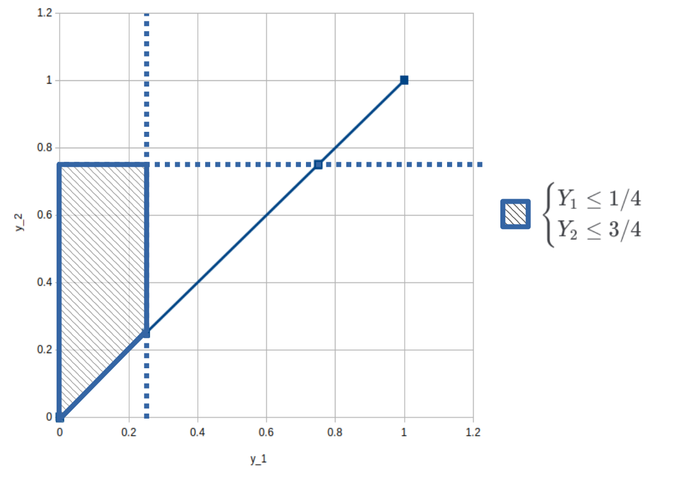

(b) Sketch the probability density functions of X and Y .

fX(x) : displayed by the blue line
The support fX(x) is 0≤x≤2
fY(y) : displayed by the orange line
The support fY(y) is 0≤y≤1
Exericse 2
Suppose X1 , . . . , Xn are i.i.d. exp(λ) for some λ > 0 and some integer n > 0. Prove that X1 , the first order statistic, is exp(nλ).
Density of the minimum: fX1(x)=nfX(x)(1−FX(x))n−1=n(λe−λx)(1−(1−e−λx))n−1=n(λe−λx)(e−λx)n−1=n(λe−λx)e−λx(n−1)=(nλ)e−(nλ)x=exp(nλ)
Exericse 3
Let n be the total amount of console
Let x0 be a proportion of console that have no defect
Let x1 be a proportion of console that have exactly 1 defect
Let x2 be a proportion of console that have more than 2 defect {x0+x1+x2=1x1+x2<1⇒x0>0 (a) What is the probability of randomly choosing a working console, i.e. one with no defects? P0=Cn1Cx0∗n1=nx0n=x0=1−x1−x2 (b) If 5 are chosen at random, what is the probability of getting at least one with no defects?
Let ppass be the probability for getting a console with no defect
Let pfail be the probability for getting a console with at least 1 defect ppasspfail=1−p1−p2=p1+p2
Apply binominal distribution, probability for getting 5 consoles, all have at least 1 defect is PallFail=(55)∗(pfail)5∗(ppass)0=(pfail)5=(p1+p2)5
Probability for getting at least 1 working consold is: P=1−PallFail=1−(p1+p2)5
(c) Keith buys n Gameboys selected at random from the box. The cost of repairing the broken Gameboys is C=Y1+3Y2 , where Y1 is the number with one defect and Y2 is the number with more than one defect. Find the expected value and variance of C. CE(C)=Y1+3Y2=E(Y1)+E(3Y2)
Exericse 4
f(y1,y2)={k(1−y2)00≤y1≤y2≤1otherwise
(a) Draw a sketch of the area where the probability density function is nonzero
The support of f(y1,y2) is {0≤y1≤y20≤y2≤1

(b) What are the conditions for f to be a valid pdf? Show that for these to be true we need k = 6 ⇔⇔⇔⇔⇔⇔⇔⇔∫01∫0y2k(1−y2)dy1dy2∫01k(1−y2)∫0y2dy1dy2∫01k(1−y2)y1∣0y2dy2∫01k(1−y2)y2dy2∫01k(y2−y22)dy2k(2y22−3y23)∣∣01k(21−31)k61k=1=1=1=1=1=1=1=1=6
(c) Draw the appropriate integration region and find P(Y1≤1/4,Y2≤3/4)
 P(Y1≤1/4,Y2≤3/4)=P(0≤Y1≤1/4,Y1≤Y2≤3/4)=∫01/4∫y13/46(1−y2)dy2dy1=∫01/46(y2−2y22)∣y13/4dy1=∫01/46(3215−y1+2y12)dy1=6(3215y1−2y12+6y13)∣∣01/4=3217=0.531 25 (d) Find the marginal density function of Y1 f(y1)=∫y116(1−y2)dy2=6(y2−2y22)∣y11=6(21−y1+2y12)∣y11=3−6y1+3y12 (e) Find the marginal density function of Y2 f(y2)=∫0y26(1−y2)dy1=6(1−y2)y1∣0y2=6(1−y2)y2